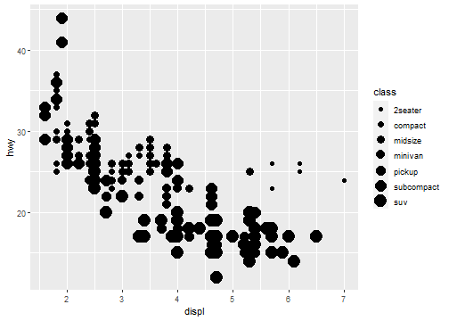
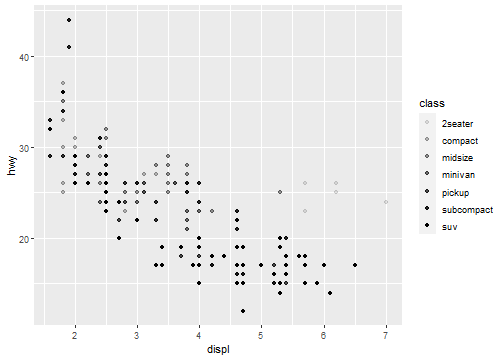
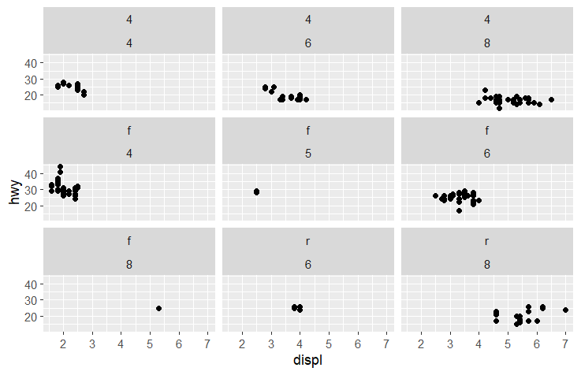
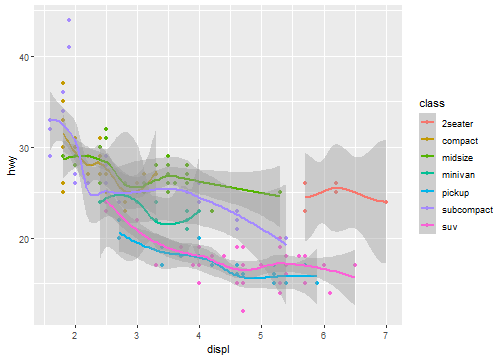
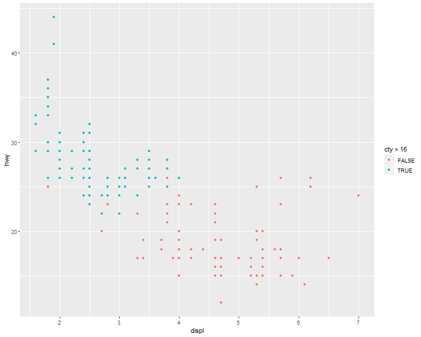
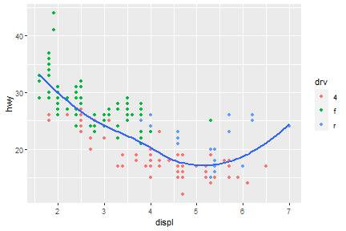
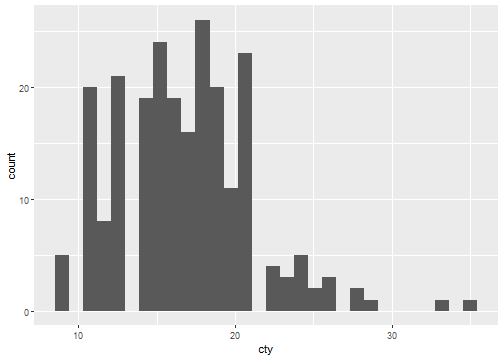
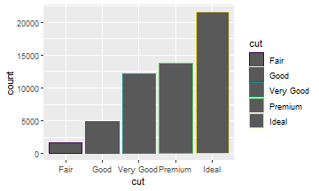

Basic Data Visualization in R
Chart selection
A great explanation on selecting a right chart type by Dr. Andrew Abela.
but as a data scientist should not be limited by this.

Components of the plots
- Layers:
- Dataset
- Aesthetic mapping (color, shape, size, etc.)
- Statistical transformation
- Geometric object (line, bar, dots, etc.)
- Position adjustment
- Scale (optional)
- Coordinate system
- Faceting (optional)
- Defaults
ggplot2 full syntax
ggplot(data = <DATASET>,
mapping = aes( <MAPPINGS>) +
layer(geom = <GEOM>,
stat = <STAT>,
position = <POSITION>) +
<SCALE_FUNCTION>() +
<COORDINATE_FUNCTION>() +
<FACET_FUNCTION>()
A typical graph template
ggplot(data = <DATASET> ,
mapping = aes(<MAPPINGS)) +
<GEOM_FUNCTION>()
Creat a plot with basic data
ggplot(data=mpg)+
geom_point(mapping = aes(x=displ>2,y=hwy))

ggplot(data=mpg[mpg$model=="a4",])+
geom_point(mapping = aes(x=displ,y=hwy))

Aesthetic Mappings
The greatest value of a picture is when it forces us to notice what we never expected to see.
—John Tukey
Basic components of aesthetic mapping:
- Mapping
- Size
- Alpha
- Shape
- Color
Map the colors of your points to the class variable to reveal the class of each car:
Aesthetic Mappings: Mapping
ggplot(data = mpg) +
geom_point(mapping = aes(x = displ, y = hwy, color = class))

Aesthetic Mappings: Size
Not recommend mapping an unordered variable to an ordered aesthetic:
ggplot(data = mpg) +
geom_point(mapping = aes(x = displ, y = hwy, size = class))

Aesthetic Mappings: Alpha
ggplot(data = mpg) +
geom_point(mapping = aes(x = displ, y = hwy, alpha = class))

Aesthetic Mappings: Shape
ggplot(data = mpg) +
geom_point(mapping = aes(x = displ, y = hwy, shape = class))

What happened to the SUVs? ggplot2 will only use six shapes at a time.
By default, additional groups will go unplotted when you use this aesthetic.
R has 25 built-in shapes that are identified by numbers

Aesthetic Mappings: Color
For each aesthetic you use, the aes() to associate the name of the aesthetic with a variable to display. The aes() function gathers together each of the aesthetic mappings used by a layer and passes them to the layer’s mapping argument.
ggplot(data = mpg) +
geom_point(mapping = aes(x = displ, y = hwy), color = "blue")

Exercise
Which variables in mpg are categorical? Which variables are continuous? (Hint: type ?mpg to read the documentation for the dataset.) How can you see this information when you run mpg?
Map a continuous variable to color, size, and shape. How do these aesthetics behave differently for categorical versus continuous variables?
Facets
Facets: facet_wrap()
The first argument of facet_wrap() should be a formula, which you create with ~ followed by a variable name (here “formula” is the name of a data structure in R, not a synonym for “equation”). To facet your plot by a single variable (discrete), use facet_wrap()
ggplot(data = mpg) +
geom_point(mapping = aes(x = displ, y = hwy)) +
facet_wrap( ~ class, nrow = 2)

Facets: facet_grid()
To facet your plot on the combination of two variables, add facet_grid() to your plot call.
ggplot(data = mpg) +
geom_point(mapping = aes(x = displ, y = hwy)) +
facet_grid(drv ~ cyl)

Tip:
If you want to use
facet_wrapto do the above plot.ggplot(data = mpg) + geom_point(mapping = aes(x = displ, y = hwy)) + facet_wrap(drv ~ cyl)You will see,

This is the difference between `facet_wrap` and `facet_grid`.
Geometric Objects
A geom is the geometrical object that a plot uses to represent data. People often describe plots by the type of geom that the plot uses. For example, bar charts use bar geoms, line charts use line geoms, boxplots use boxplot geoms, and so on.
ggplot(data = mpg) +
geom_point(mapping = aes(x = displ, y = hwy))

geom_smooth(): 95% confidence level interval for predictions
ggplot(data = mpg) +
geom_smooth(mapping = aes(x = displ, y = hwy))
What if we would like to group the smooth_line by drv?
ggplot(data = mpg) +
geom_smooth(mapping = aes(x = displ, y = hwy, group = drv))

Now, arrange colors on different type of drv.
ggplot(data = mpg) +
geom_smooth(mapping = aes(x = displ, y = hwy, color = drv),
show.legend = FALSE)
We can also add up one more geom layer to the current one.
ggplot(data = mpg) +
geom_point(mapping = aes(x = displ, y = hwy)) +
geom_smooth(mapping = aes(x = displ, y = hwy))

Global and local mappings
ggplot(data = mpg) +
geom_point(mapping = aes(x = displ, y = hwy)) +
geom_smooth(mapping = aes(x = displ, y = hwy))
ggplot2 will treat these mappings as global mappings that apply to each geom in the graph. In other words, this code will produce the same plot as the previous code:
ggplot(data = mpg, mapping = aes(x = displ, y = hwy)) +
geom_point() +
geom_smooth()
Local mappings
ggplot(data = mpg) +
geom_point(mapping = aes(x = displ, y = hwy)) +
geom_smooth(mapping = aes(x = displ, y = hwy, color=class))

Global mapping
ggplot(data = mpg, mapping = aes(x = displ, y = hwy, color=class)) +
geom_point() +
geom_smooth()

Change the color for geom_point layer only.
ggplot(data = mpg, mapping = aes(x = displ, y = hwy)) +
geom_point(mapping = aes(color = class)) +
geom_smooth()

Filter out data in a layer
ggplot(data = mpg, mapping = aes(x = displ, y = hwy)) +
geom_point(mapping = aes(color = class)) +
geom_smooth(data = mpg[mpg$class == "subcompact", ],
se = FALSE)

ggplot(data = mpg, mapping = aes(x = displ, y = hwy)) +
geom_point(mapping = aes(color = cty>16))

ggplot(data = mpg, mapping = aes(x = displ>4, y = cty)) +
geom_boxplot()

as.factor()
ggplot(mpg, aes(x = displ, y = hwy)) +
geom_point(aes(color = as.factor(cty)), size=5)
Exercise 1
Re-create the R code necessary to generate the following graphs.
a b

a
ggplot(mpg,
aes(x = displ, y = hwy)) +
geom_point(size=5) +
geom_smooth(se=F)
b
ggplot(mpg,
aes(x = displ, y = hwy)) +
geom_point(size=5) +
geom_smooth(aes(class=drv),se=F)
Exercise 2
Re-create the R code necessary to generate the following graphs.
a b 

a
ggplot(mpg,
aes(x = displ, y = hwy)) +
geom_point(aes(color=drv)) +
geom_smooth(aes(class=drv, color=drv),se=F)
b
ggplot(mpg,
aes(x = displ, y = hwy)) +
geom_point(aes(color=drv)) +
geom_smooth(se=F)
Exercise 3
Re-create the R code necessary to generate the following graphs.
a b


a
ggplot(mpg,
aes(x = displ, y = hwy)) +
geom_point(aes(color=drv)) +
geom_smooth(aes(class=drv, color=drv, shape=drv, linetype=drv),se=F)
b
ggplot(mpg,
aes(x = displ, y = hwy)) +
geom_point(aes(fill=drv), shape=21, color="white", size=5, stroke=5) +
geom_smooth(se=F)
Statistical transformation
Many graphs, like scatterplots, plot the raw values of your dataset. Other graphs, like bar charts, calculate new values to plot.
The algorithm used to calculate new values for a graph is called a stat, short for statistical transformation. The following figure describes how this process works with geom_bar().
The diamonds dataset comes in ggplot2 and contains information about ~54,000 diamonds, including the price, carat, color, clarity, and cut of each diamond. The chart shows that more diamonds are available with high-quality cuts than with low quality cuts:
ggplot(data = diamonds) +
geom_bar(mapping = aes(x = cut))

Common geom with statistical transformation
Typically, you will create layers using a geom_ function.
- geom_bar, bar chart
- stat="count"
- geom_histogram, histogram
- stat="bin"
- geom_point, scatterplot
- stat="identity"
- geom_qq, quantile-quantile plot
- stat="qq"
- geom_boxplot, boxplot
- stat="boxplot"
- geom_line, line chart
- stat="identity"
Therefore, we can use stat function instead of geom.
As we mentioned in the previous class, each stat has a default geom function.
- stat_count
- stat_qq
- stat_identity
- stat_bin
- stat_boxplot
stat_count
geom_bar shows the default value for stat is “count,” which means that geom_bar() uses stat_count().
geom_bar() uses stat_count() by default: it counts the number of cases at each x position.
For example, you can re-create the previous plot using stat_count() instead of geom_bar():
ggplot(data = diamonds) +
stat_count(mapping = aes(x = cut))

stat_qq
ggplot(mpg)+
stat_qq(aes(sample=cty))

stat_identity
ggplot(mpg)+
stat_identity(aes(displ,cty))

stat_bin
ggplot(mpg)+
stat_bin(aes(cty))

stat_boxplot
ggplot(mpg)+
stat_boxplot(aes(class,cty))
Identity stat
If you want the y axis of bar chart to represent values instead of count, use stat="identity"
ggplot(data = diamonds) +
geom_bar(mapping = aes(x = cut, y=price), stat="identity")

If you want the heights of the bars to represent values in the data, use geom_col() instead, which is the identity stat version of geom_bar
ggplot(data = diamonds) +
geom_col(mapping = aes(x = cut, y=price))

Stat proportion
ggplot(data = diamonds) +
geom_bar(mapping = aes(x = cut, y = ..prop.., group = 1))

Position Adjustments
There’s one more piece of magic associated with bar charts. You can color a bar chart using either the color aesthetic, or more usefully, fill:
ggplot(data = diamonds) +
geom_bar(aes(x = cut,
color = cut))

ggplot(data = diamonds) +
geom_bar(aes(x = cut,
fill = cut))

Position Adjustments: stack
Note what happens if you map the fill aesthetic to another variable, like clarity: the bars are automatically stacked. Each colored rectangle represents a combination of cut and clarity:
ggplot(data = diamonds) +
geom_bar(mapping = aes(x = cut, fill = clarity))

Position Adjustments: identity
position = "identity" will place each object exactly where it falls in the context of the graph.
This is not very useful for bars, because it overlaps them.
ggplot(data = diamonds,
mapping = aes(x = cut, fill = clarity)) +
geom_bar(position = "identity")
To be clearer, we change the transparancy of the bars.
ggplot(data = diamonds,
mapping = aes(x = cut, fill = clarity)) +
geom_bar(alpha=1/5,position = "identity")
Did you notice that some of the bars are overlaping?
Therefore, we need to be careful with identity.
You may use the following methods to fix this issue.
Position Adjustments: fill
position = "fill" works like stacking, but makes each set of stacked bars the same height. This makes it easier to compare proportions across groups:
ggplot(data = diamonds) +
geom_bar(mapping = aes(x = cut, fill = clarity),
position = "fill")
Position Adjustments: dodge
position = "dodge" places overlapping objects directly beside one another. This makes it easier to compare individual values:
ggplot(data = diamonds) +
geom_bar(mapping = aes(x = cut, fill = clarity),
position = "dodge")

Position Adjustments: jitter
There’s one other type of adjustment that’s not useful for bar charts, but it can be very useful for scatterplots. Recall our first scatterplot. Did you notice that the plot displays only 126 points, even though there are 234 observations in the dataset?
ggplot(data = mpg) +
geom_point(mapping = aes(x = displ, y = hwy))

position = "jitter" adds a small amount of random noise to each point. This spreads the points out because no two points are likely to receive the same amount of random noise:
ggplot(data = mpg) +
geom_point(mapping = aes(x = displ, y = hwy),
position = "jitter")
Dual y axis
Two y variables with one y axis, the cty is shifted down.
ggplot(data = mpg) +
geom_point(mapping = aes(x = displ, y = hwy)) +
geom_smooth(mapping = aes(x = displ, y = cty))
sec_axis() function is able to deal with dual axis
ggplot(data = mpg) +
geom_point(mapping = aes(x = displ, y = hwy)) +
geom_smooth(mapping = aes(x = displ, y = cty))+
scale_y_continuous(sec.axis = sec_axis(~.*0.7, name = "cty"))
Coordinate Systems
Coordinate systems are probably the most complicated part of ggplot2. The default coordinate system is the Cartesian coordinate system where the x and y position act independently to find the location of each point.
# first: install.packages(c("maps","mapproj")) ----
# then ----
sw <- map_data("state",
region = c("texas",
"oklahoma",
"louisiana"))
ggplot(sw) +
geom_polygon(
mapping = aes(x = long,
y = lat,
group = group),
fill = NA,
color = "black"
) +
coord_map()

But what if we don't have geocode information
- ggmap package will return geocodes from cities' name. However, as of mid-2018, google map requires a registered API key, which needs a valid credit card (SAD!).
- Therefore, we have to find an altervative way. You could find geocodes data table included cities name on: census.gov or other open liscence sources, e.g. ods.
Then, how to connect geocode table with our original data table by using base function?
Merge geocode with city's name or zip or both
cities <-
data.frame(
City = c("Boston", "Newton", "Cambridge"),
Zip = c(2110, 28658, 5444)
)
gcode <-
read.csv("E:/IE6600/materials/R/R/hwData/usZipGeo.csv", sep = ";")
newCities <-
merge(cities, gcode, by.x = c("City", "Zip")) %>%
subset(select = c("City", "Zip", "Longitude", "Latitude"))
newCities
## City Zip Longitude Latitude
## 1 Boston 2110 -71.05365 42.35653
## 2 Cambridge 5444 -72.90151 44.64565
## 3 Newton 28658 -81.23443 35.65344
Coordinate Systems: polar
For example, first we do a barchart based on the diamonds dataset.
ggplot(data = diamonds) +
geom_bar(
mapping = aes(x = cut, fill = cut),
show.legend = FALSE,
width = 1
) +
theme(aspect.ratio = 1) +
labs(x = NULL, y = NULL)+
coord_flip()

Then we convert it to a polar system by using coord_polar().
ggplot(data = diamonds) +
geom_bar(
mapping = aes(x = cut, fill = cut),
show.legend = FALSE,
width = 1
) +
theme(aspect.ratio = 1) +
labs(x = NULL, y = NULL)+
coord_polar()

Bar chart vs Histogram
ggplot(data = mpg, mapping = aes(x=drv)) +
geom_bar()

ggplot(data = mpg, mapping = aes(x=cty)) +
geom_histogram()

Boxplot
ggplot(data = mpg, mapping = aes(x = class, y = hwy)) +
geom_boxplot()

ggplot(data = mpg, mapping = aes(x = class, y = hwy)) +
geom_boxplot(aes(color=class))
Scatter plot
ggplot(data = mpg,
mapping = aes(x = displ, y = hwy)) +
geom_point()
What do you think of this plot? Can it be improved?
Jitter
ggplot(data = mpg,
mapping = aes(x = displ, y = hwy)) +
geom_point(position = "jitter")

Avoid overlapping
ggplot(diamonds, mapping = aes(x = carat, y = price)) +
geom_point()

Avoid overlapping: Change size
ggplot(diamonds, mapping=aes(x=carat, y=price)) +
geom_point(size=0.1)

Avoid overlapping: Change alpha
ggplot(diamonds, mapping=aes(x=carat, y=price)) +
geom_point(alpha=0.1)

References
[1] Dr. Andrew Abela, Choosing a good chart
[2] Hadley Wickham, Garrett Grolemund. R For Data Science.
[3] Hadley Wickham, A layered grammar of graphics
[4] Winston Chang, R Graphics Cookbook